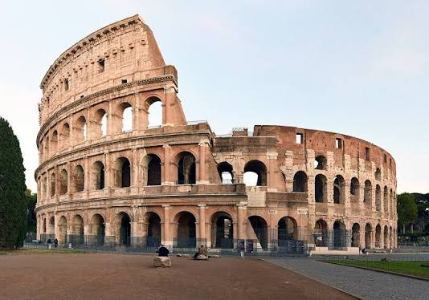
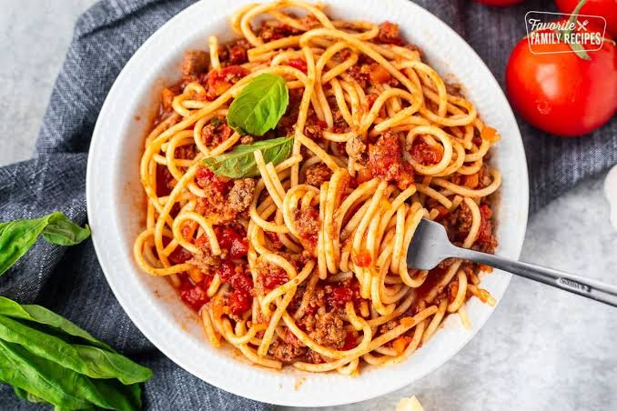

Визначні пам'ятки

Римський Форум, величний Пантеон, Фонтан Треві та собор Святого Петра у Ватикані вражають своєю красою.
Кухня та гастрономія

Ароматний еспресо біля бару зранку та хрумка піца на тонкому тісті ввечері — обов'язкова частина римських буднів.
Культура та традиції
Римський спосіб життя сповнений філософією «la dolce vita» — умінням насолоджуватися моментом, смачною їжею та мистецтвом.
Особисті враження
Загадати бажання та кинути монетку у Фонтан Треві під чарівний акомпанемент вуличних музикантів — емоція на все життя.